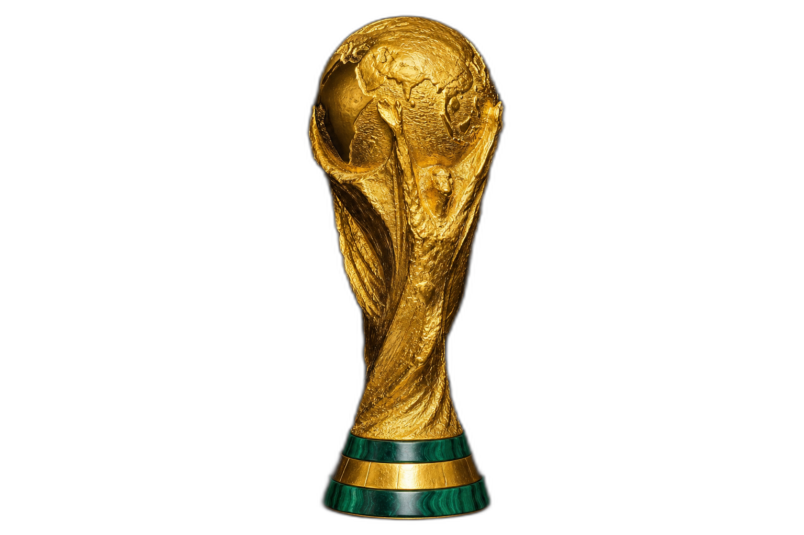

GPSL International
All GPDB nations · qualifying · finals knockout
All GPDB nations selectable · World Cup finals format: 12 qualifying groups of 5 · top 2 plus 8 best third places (32 finalists) · 8 groups of 4 in the finals · R16 → QF → SF → Final. Finals held in pre-season of Season 5, 9, … (after the two qualifying seasons).
Top 2 in each group qualify automatically (cut line below 2nd). 3rd place is marked; the best 8 thirds overall also reach the finals (32 teams).
Loading…
Each nation plays 8 matches (4 per season). Use the window tabs (Aug / Oct / Dec / Feb / Apr × two seasons). Your nation’s ties are highlighted. Arrange results on International matchday.
Top two from each group advance to the last 16 (cut line below 2nd).
Pre-season windows for the finals season. Your nation’s ties are highlighted.
Knockout bracket will appear once finals groups are complete.